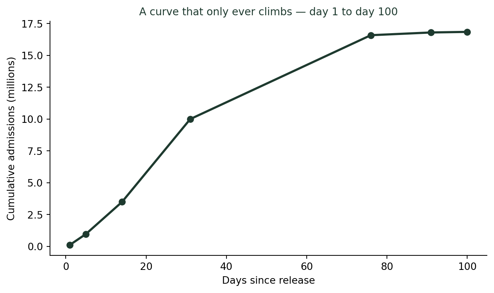
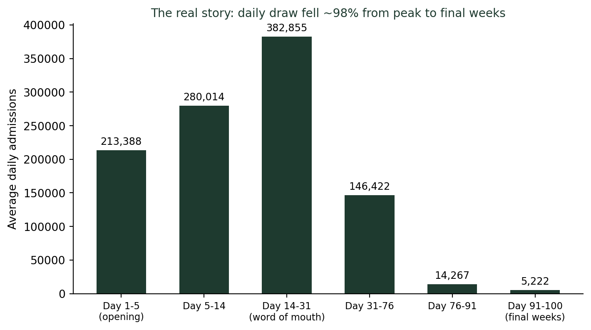

(그래프는 어떻게 우리를 속이는가) 누적그래프는 왜 항상 좋아 보일까?
통계기초
데이터시각화
2026년 최고 흥행작 ‘왕과 사는 남자’는 개봉 100일이 지나도록 ’누적 관객수 돌파’ 기사가 이어졌다. 그런데 같은 기간 하루 평균 관객 수는 21만 명에서 5천 명으로, 98% 가까이 줄어 있었다. 누적그래프만 보고는 알 수 없는 이야기다.
“멈출 줄 모른다”는 기사가 나올 때, 실제로는 이미 멈춰 있었다
올해 최고 흥행작 ’왕과 사는 남자’는 2026년 2월 4일 개봉해 역대 한국 영화 흥행 2위, 1,600만 관객을 넘긴 대작이다. 이 영화를 다룬 기사 제목들을 시간순으로 늘어놓으면 이렇다. “100만 돌파”, “천만 돌파”, “누적 1658만…매출액 1601억”, “멈출 줄 모르는 ‘왕과 사는 남자’, 이제 1700만도 가시권”. 마지막 기사가 나온 5월 중순까지도 제목만 보면 여전히 기세가 등등해 보인다.
그런데 실제 수치를 뜯어보면 이야기가 다르다. 개봉 후 90일에서 100일 사이(5월 5일~14일), 이 영화의 하루 평균 관객 수는 5,222명이었다. 개봉 첫 주(2월 4일~8일) 하루 평균 21만 3,388명과 비교하면 98% 가까이 줄어든 수치다. “1700만도 가시권”이라는 문구가 주는 인상과, 하루 5천 명이라는 실제 숫자 사이에는 큰 간극이 있다.
이 간극이 생기는 이유는 기사가 매번 참조하는 그래프, 누적 관객수 그래프의 성질에 있다.
누적값은 절대 내려가지 않는다
누적 관객수는 매일의 관객 수를 계속 더해나간 값이다. 오늘 관객이 단 한 명이라도 있었다면, 누적 관객수는 어제보다 조금이라도 늘어난다. 절대로 줄어들 수 없다. 수학적으로 이는 매일 0 이상인 값을 계속 더하는 것이므로, 누적값의 그래프는 항상 오르거나 최소한 평평할 뿐, 결코 아래로 꺾이지 않는다.
이 곡선은 초반에 가파르게 오르다가, 뒤로 갈수록 눈에 띄게 평평해진다. 그런데도 여전히 “오르고 있다”는 사실 자체는 변하지 않는다. 언론이 몇 달째 “돌파” 기사를 계속 낼 수 있는 이유가 바로 여기 있다. 누적값은 흥행이 사실상 끝난 뒤에도 계속 “새로운 기록”을 만들어낸다. 어제보다 한 명이라도 더 봤다면, 그것으로 “역대 몇 위 돌파”라는 제목을 뽑을 수 있기 때문이다.
진짜 이야기는 “기울기”에 있다
누적그래프에서 실제로 중요한 정보는 곡선의 높이가 아니라 기울기, 즉 그 구간에 하루 평균 몇 명이 새로 늘었는가다. 개봉 후 구간별로 하루 평균 관객 수를 계산해보면 다음과 같다.

개봉 3~4주 차(설 연휴 입소문 효과)에 하루 평균 38만 명까지 올랐던 관객 수는, 개봉 76일 이후에는 하루 1만 4천 명, 마지막 열흘 구간에는 하루 5천 명 수준까지 떨어졌다. 이 변화는 누적그래프의 “높이”만 봐서는 전혀 보이지 않는다. 곡선이 평평해지는 것을 눈으로 알아채려면 그래프를 유심히 봐야 하고, 심지어 평평해 보이는 구간조차 “그래도 오르고 있으니 여전히 흥행 중”이라는 인상을 준다.
“돌파” 기사가 계속 나오는 이유
누적값 기반의 마일스톤(“천만 돌파”, “1500만 돌파”)은 언론이 반복해서 다시 쓰기 좋은 소재다. 실제 흥행 동력이 죽어도, 상영관이 몇 개라도 남아 있고 관객이 하루 몇천 명이라도 든다면 누적값은 계속 새로운 정수 단위를 넘기며 “돌파” 제목을 만들어낸다. 이는 영화 흥행만의 이야기가 아니다. 스타트업의 “누적 가입자 수”, 유튜브 채널의 “누적 조회수”, 국가의 “누적 국가채무”도 같은 성질을 가진다. 누적 지표는 상황이 나빠지고 있을 때조차 좋아 보이는 방향으로만 움직인다.
누적그래프가 항상 나쁜 것은 아니다
총량 자체가 의미 있는 지표라면(예: 영화의 최종 흥행 성적, 누적 매출 총액) 누적그래프는 유용하다. 문제는 누적그래프 하나만 보여주고 증가 속도의 변화를 함께 알려주지 않을 때 생긴다. 좋은 시각화는 누적값과 함께 일별·주별 증감을 나란히 보여줘, 독자가 “지금 상황이 나아지고 있는지 나빠지고 있는지”를 곡선의 높이가 아니라 기울기로 판단할 수 있게 한다.
누적그래프를 볼 때 확인할 것
- 곡선의 높이가 아니라 기울기를 보라. 최근 구간이 가파른가, 평평한가?
- “돌파” 표현에 낚이지 말라. 누적값은 정의상 언젠가 모든 정수 단위를 넘긴다. 문제는 며칠 만에 넘겼는가다.
- 일별·주별 증감 그래프가 따로 있는지 찾아보라. 없다면, 누적값만으로는 지금이 상승기인지 하락기인지 알 수 없다.
더 깊이: 누적값은 왜 원래 정의부터 “내려갈 수 없는” 값인가
강의노트 〈기초통계 8. 시계열분석 — 평균 0인 모형〉은 누적합으로 만들어지는 시계열을 랜덤워크(Random Walk)로 정의한다. 매일의 변화량 \(X_t\)를 \(S_t = X_1 + X_2 + \cdots + X_t\)처럼 계속 더해나간 것이 누적값 \(S_t\)다. 이 정의를 뒤집으면, 원래의 “매일의 변화량”을 다시 보려면 누적값을 하루 전 값과 빼주면 된다. 시계열 분석에서는 이 되돌리기 작업을 차분(differencing), \(Y_t - Y_{t-1}\)이라 부른다. 관객수 그래프로 치면, 누적 관객수를 하루 전 누적 관객수와 빼는 순간 비로소 “그날 실제로 몇 명이 봤는가”라는, 우리가 정말 알고 싶었던 숫자가 드러난다.
결론: 오르기만 하는 그래프는 질문을 멈추게 한다
누적그래프의 가장 큰 함정은 거짓을 말하는 것이 아니라, 질문을 멈추게 만드는 것이다. 계속 오르는 곡선을 보면 “잘되고 있구나”라고 넘어가기 쉽다. 그러나 그 곡선이 오르고 있다는 사실만으로는 지금 이 순간의 기세를 전혀 알 수 없다. 하루 21만 명이 보던 영화든, 하루 5천 명이 보던 영화든, 누적 그래프는 똑같이 우상향한다.
나는 이 사례를 보여줄 때 학생들에게 이렇게 묻는다. “이 영화, 지금도 잘 되고 있는 걸까요?” 답은 누적그래프가 아니라, 그 뒤에 숨어 있는 하루하루의 기울기에 있다.